Asignatura: Inferencia bayesiana. Segunda entrega
Docente: Diana Herrero Coronel
Alumno: Antonio López García
Universidad: Carlemany Bachelor de Ciencia de Datos
Retomando la Actividad 2 de la semana 1 cuyo enunciado indicaba: “Los datos que se muestran a continuación representan el número de llamadas a un Callcenter (en intervalos de 2 minuto medidos 50 veces):
0, 0, 0, 0, 0, 0, 1, 1, 1, 1, 1, 1, 1, 1, 1, 1, 1, 1, 1, 1, 1, 1, 1, 1, 2, 2, 2, 2, 2, 2, 2, 2, 2, 3, 3, 3, 3, 3, 3, 3, 4, 4, 4, 4, 5, 5, 5, 5, 5, 5
Usando una distribución previa Gamma(2, 1), obtener la distribución posterior bajo un modelo de Poisson(𝜃𝜃) para los datos.”
a) Obtén los estimadores bayesianos que minimizan las funciones de riesgo: 𝑙𝑙1, 𝑙𝑙2 𝑦𝑦 𝑙𝑙3.
b) Calcular un intervalo bayesiano de credibilidad con probabilidad del 95% einterpreta su resultado
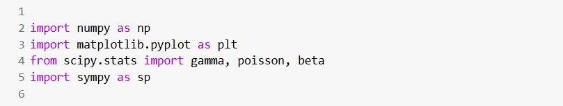 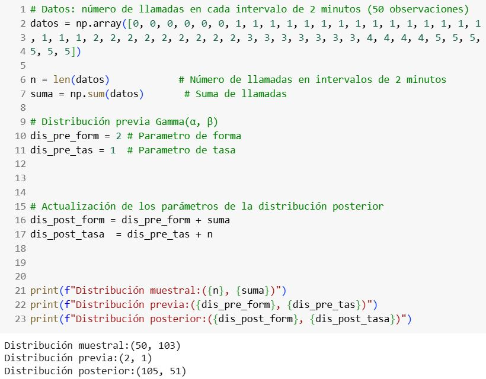 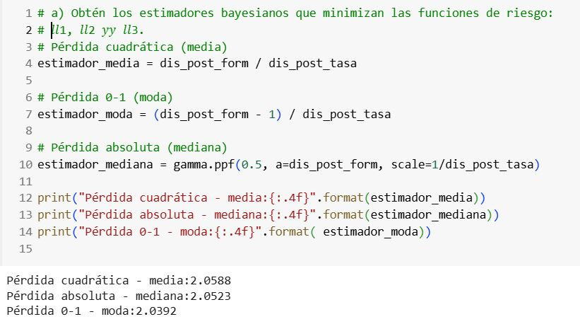 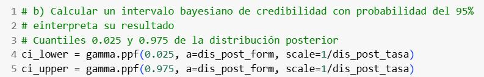Intervalo de credibilidad 95%: [1.6839, 2.4709]
Con un 95% de credibilidad, se puede interpretar que existe una probabilidad del 95% de que el parámetro θ se encuentre entre 1.6839 y 2.4709.
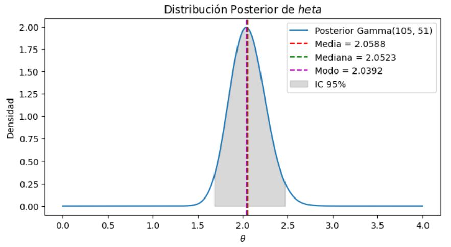Un centro de investigación trabaja en el desarrollo un nuevo método para poder diagnosticar enfermedades infecciosas de manera más eficaz. El método que se venía usando proporcionaba un error del 17%, es decir, no detectaba la infección en el 17% de los pacientes que la padecían. Se escoge una muestra aleatoria de 100 pacientes con el objetivo de comparar los dos métodos. De los 100 pacientes de la muestra, el nuevo método ha fallado en 12 casos.
El objetivo del analista es poder disminuir la incertidumbre en la tasa de fallos del nuevo método (𝜃𝜃), y basándose en todo su conocimiento acumulado, determina que la tasa sigue una distribución previa 𝐵eta(1,6).
a) Calcular 1 estimador bayesiano asociado a la función de riesgo que consideres más apropiada y explica porque la has escogido.
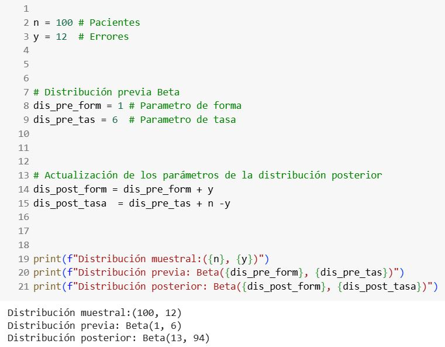 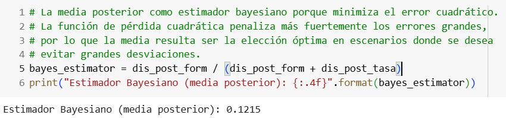b) Calcular un intervalo bayesiano de credibilidad con probabilidad del 95% e interpreta su resultado.
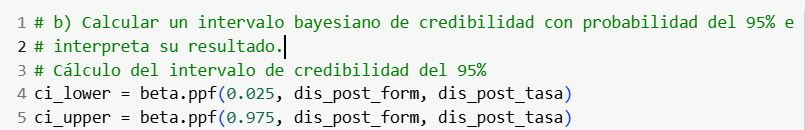Intervalo de credibilidad 95%: [0.0669, 0.1894]
Con un 95% de credibilidad, se puede interpretar que existe una probabilidad del 95% de que el parámetro θ se encuentre entre 0.0669 y 0.1894.
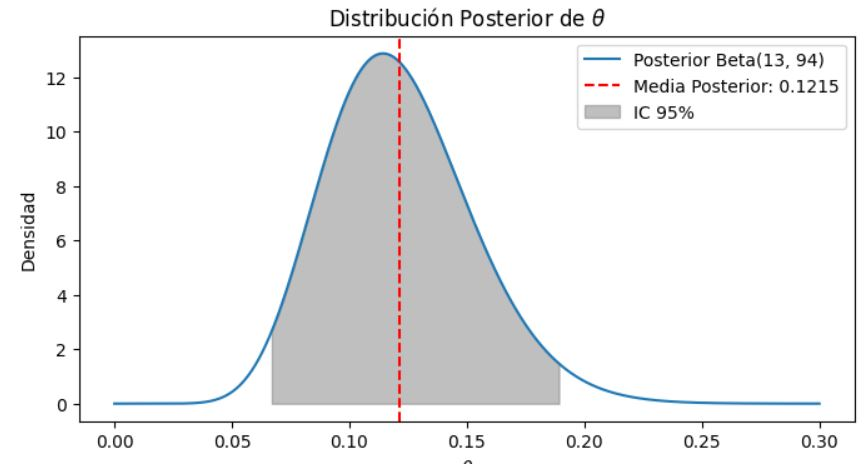Una empresa aseguradora con 15.000 clientes quiere estimar la tasa de reclamaciones falsas anuales. Se contrata a un experto para llevar a cabo un estudio, quien considerando toda la información disponible decide modelizar la tasa de reclamaciones falsas siguiendo una Beta(a, b) de hiperparámetros a y b desconocidos.
Se seleccionan 50 reclamaciones aleatoriamente y no se observa ninguna reclamación falsa. Consideramos una media de 0,05 y una moda de 0,03.
a) ¿Cuál es el valor de los hiperparámetros a y b?
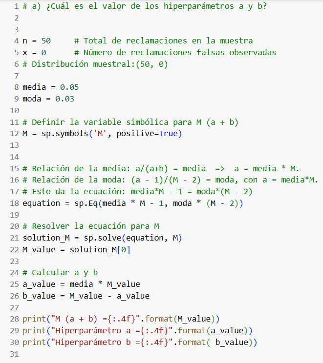 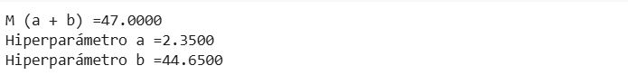b) Calcula 2 estimadores puntuales bayesianos del parámetro 𝜃𝜃.
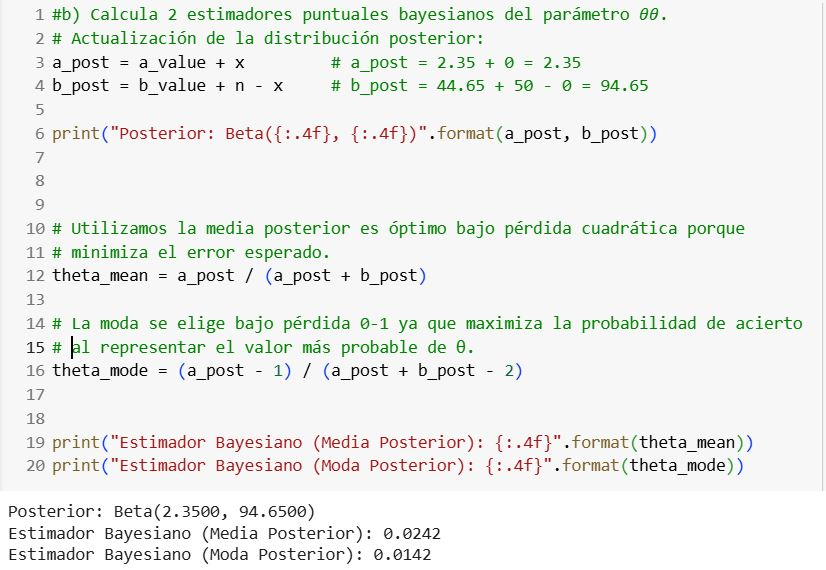c) Calcular un intervalo bayesiano de credibilidad con probabilidad 95% e interpreta su resultado.
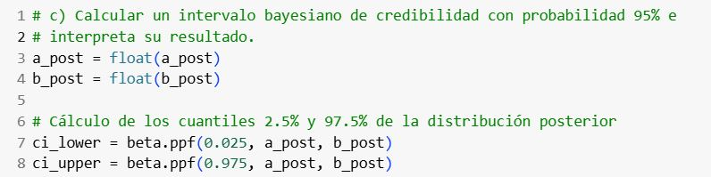Intervalo de credibilidad 95%: [0.0038, 0.0627]
Existe un 95% de probabilidad de que el valor real de θ se encuentre entre el límite inferior (0.0038) y el límite superior (0.0627)
Una determinada marca asegura que el 95% de sus coches no necesitarán reparación durante los 3 años de garantía. Esta creencia se puede modelizar mediante una Beta(a,b) con hiperparámetros a=4,75 y b=0,25.
El comercial es muy persuasivo de modo que acabamos comprando 20 vehículos de dicha marca para nuestra empresa, de los cuales 12 de ellos requieren reparación durante el periodo de garantía indicado.
a) Calcula los 3 estimadores puntuales bayesianos que hemos estudiado en clase.
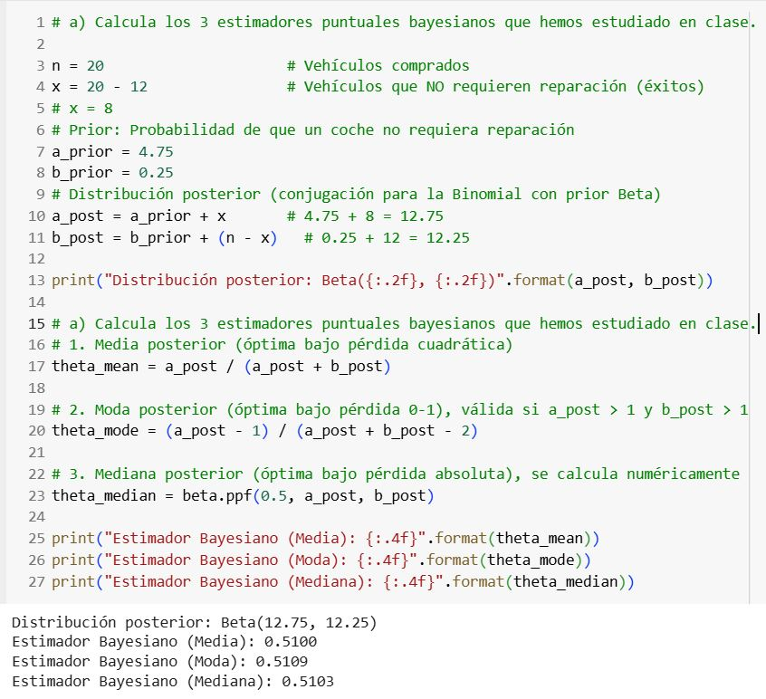b) Realiza una estimación por intervalos con probabilidad 95%
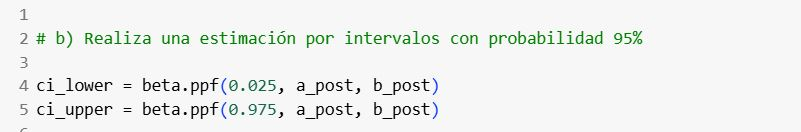Intervalo de credibilidad 95%: [0.3188, 0.6996]
Existe un 95% de probabilidad de que el valor real de θ se encuentre entre 0.3188 y 0.6996.
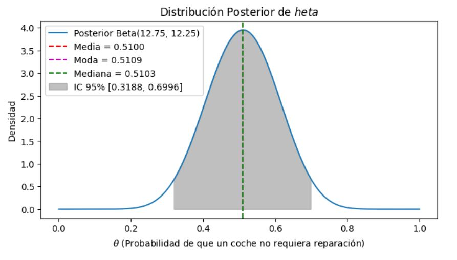
Pregunta teórica:
Explica de la manera más breve posible la principal diferencia entre:
Estimación puntual frecuentista y estimación puntual bayesiana.
Intervalo de confianza frecuentista y un intervalo de credibilidad bayesiano.
Estimación puntual frecuentista vs. bayesiana:
La estimación frecuentista es un valor fijo obtenido de los datos observados)muestra). La estimación bayesiana es un valor de la distribución posterior, que se obtiene con la distribución muestral(datos objetivos) y previa(datos subjetivos).
Intervalo de confianza frecuentista vs. intervalo de credibilidad bayesiano:
El intervalo de confianza frecuentista es un rango quese obtiene al repetir un experimento en condiciones controladas en un porcentaje ficjo(p.ej. 95%).
El intervalo de credibilidad bayesiano es un rango que indica la probabilidad (p.ej. 95%)de que el parámetro se encuentre dentro del intervalo, utilizando la distribución muestral(datos objetivos) y previa(datos subjetivos)
Para aclarar estas diferencias realizaremos un ejemplo práctico utilizando los mismos datos, calculando la proporción de personas con colesterol alto en Gran Canaria mediante ambos enfoques (frecuentista y bayesiano).
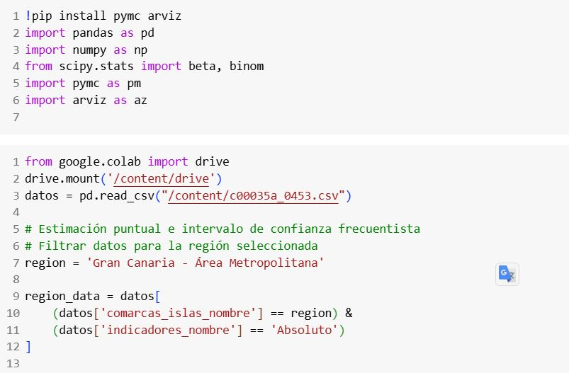 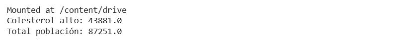 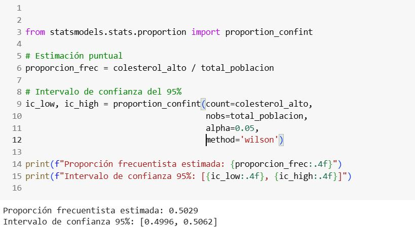 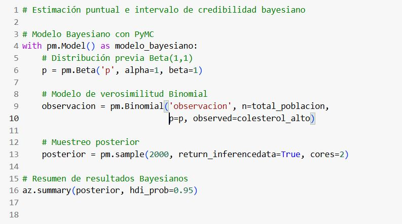 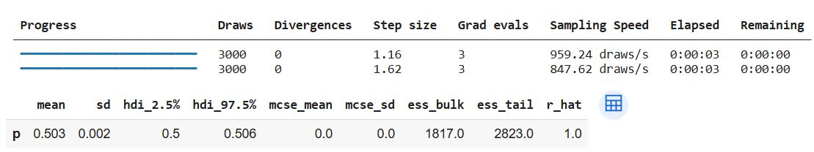 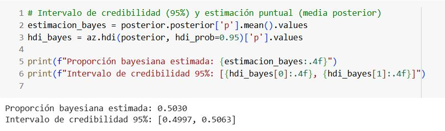